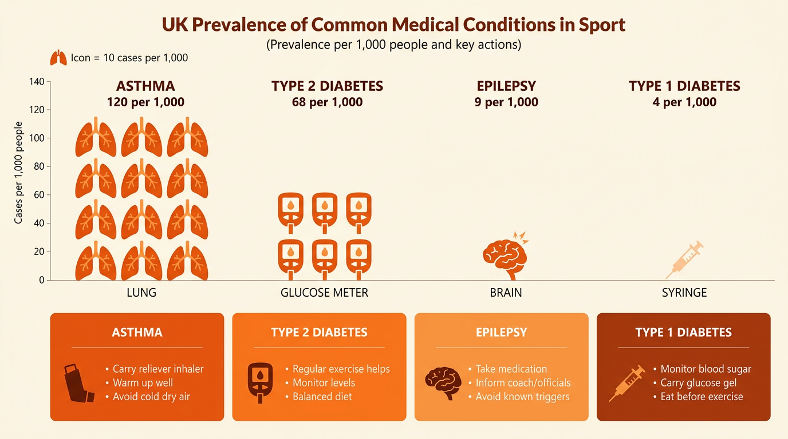

Medical Conditions in Sport
Some athletes have medical conditions that require special consideration during physical activity. These conditions do not necessarily prevent someone from taking part in sport, but coaches, officials and other performers must be aware of them and know how to respond if something goes wrong.
Coaches and officials have a duty of care towards their participants. This means they are legally and ethically responsible for their safety. Part of this duty involves knowing about any medical conditions in the group and having the right medications and emergency plans in place before activity begins.
The three medical conditions you need to know for this unit are asthma, diabetes and epilepsy. For each, you must know the causes, symptoms and treatment.
Asthma
Asthma is a condition that affects the airways. During an asthma attack, the airways narrow, swell and produce extra mucus, making it very difficult to breathe. Asthma is one of the most common medical conditions in sport — many elite athletes manage asthma successfully throughout their careers.
Causes and Triggers
Asthma attacks can be triggered by a range of factors. In a sporting context, the most relevant triggers include:
- Exercise — especially in cold or dry air, which irritates the airways.
- Dust and pollen — common when training outdoors or in dusty indoor facilities.
- Animal fur — relevant in equestrian sports or outdoor environments.
- Smoke — including cigarette smoke or bonfires near outdoor training areas.
- Cold weather — breathing in cold air causes the airways to tighten.
- Stress and anxiety — pre-competition nerves can trigger an attack.
Symptoms
The symptoms of an asthma attack range from mild to severe:
- Mild to moderate: coughing, wheezing, shortness of breath, tightness in the chest.
- Severe attack: difficulty talking or completing sentences, anxiety or panic, pale and sweaty face, grey or blue lips (a sign of oxygen deprivation).
Treatment
Immediate treatment during an asthma attack focuses on opening the airways and keeping the person calm:
- Reassure the person and create a calm environment.
- Help them use their reliever inhaler (blue) — use a spacer if one is available.
- Sit the person upright — do NOT lie them down, as this restricts breathing further.
- Encourage slow, steady breaths.
- Call 999 if: the inhaler is not available, symptoms do not improve after 10 puffs, the person is too breathless to speak, or symptoms are getting worse.
For long-term management, people with asthma use a preventer inhaler (brown or purple) taken daily to reduce inflammation in the airways and prevent attacks. In severe cases, a nebuliser may be used to deliver medication as a fine mist directly into the lungs.
Follow these steps if someone is having an asthma attack:
- Stay calm and reassure the person — panic makes breathing harder.
- Sit them upright in a comfortable position. Never lie them down.
- Help them take one puff of their reliever inhaler (blue) every 30–60 seconds, up to a maximum of 10 puffs.
- Use a spacer if available — it helps deliver medication more effectively.
- Encourage slow, steady breathing between puffs.
- If there is no improvement after 10 puffs, call 999 immediately.
- If the ambulance takes more than 15 minutes, repeat the cycle of 10 puffs.

Diabetes
Diabetes is a lifelong condition where blood sugar levels are too high because the body cannot produce or properly use insulin. Insulin is a hormone produced by the pancreas that allows glucose to enter cells from the bloodstream to be used for energy. Without insulin working properly, glucose builds up in the blood.
Type 1 Diabetes
Type 1 diabetes occurs when the body is completely unable to make insulin. Glucose builds up in the bloodstream because it cannot enter the cells. Type 1 usually develops in young people and is not linked to lifestyle. People with Type 1 must take insulin every day, either through injections or an insulin pump.
Type 2 Diabetes
Type 2 diabetes occurs when the body either makes insufficient insulin or the insulin it produces is ineffective. Too much glucose stays in the blood. Type 2 usually develops in older people and is strongly linked to lifestyle factors such as obesity, physical inactivity and a poor diet.
Type 1 = body cannot make insulin (develops in young people, requires daily insulin injections). Type 2 = body makes insufficient or ineffective insulin (develops in older people, linked to lifestyle). You must know the difference between these two types for the exam.
Symptoms of Diabetes
Both types of diabetes share common symptoms:
- Increased thirst
- Frequent urination
- Extreme tiredness
- Unexplained weight loss
- Cuts and wounds that are slow to heal
- Blurred vision
Hypoglycaemia and Hyperglycaemia
Two dangerous situations can occur with diabetes, and you need to know the difference:
- Hypoglycaemia (blood sugar too LOW) — the person may feel shaky, confused, dizzy and sweaty. Treatment: give them sweets, fruit juice or glucose tablets. Glucose gel can also be used. Check their blood sugar after 15–20 minutes. Call 999 if they lose consciousness or do not improve.
- Hyperglycaemia (blood sugar too HIGH) — the person may feel very thirsty, need to urinate frequently and feel nauseous. Treatment for Type 1: inject insulin. Treatment for Type 2: take medication. Check blood sugar after 15–20 minutes.
Exercise and Diabetes
Exercise is beneficial for managing Type 2 diabetes because physical activity helps the body use glucose more effectively. However, performers with diabetes must take precautions:
- Monitor blood sugar levels before, during and after activity.
- Always carry glucose snacks or tablets in case of a hypo.
- Ensure they have eaten appropriately before exercise.
- Make coaches and teammates aware of their condition.
Here is a comparison of the two types:
- Cause: Type 1 — body cannot produce insulin (autoimmune). Type 2 — body produces insufficient or ineffective insulin (lifestyle-related).
- Age of onset: Type 1 — usually young people. Type 2 — usually older people.
- Risk factors: Type 1 — genetics. Type 2 — obesity, inactivity, poor diet.
- Treatment: Type 1 — daily insulin injections or pump. Type 2 — medication, lifestyle changes, diet and exercise.
- Can it be prevented? Type 1 — no. Type 2 — often yes, through a healthy lifestyle.
Epilepsy
Epilepsy is a neurological disorder affecting the central nervous system. It occurs when the electrical signals in the brain become scrambled, causing seizures. Seizures can range from brief lapses in awareness to full-body convulsions.
Causes and Triggers
Epileptic seizures can be triggered by a variety of factors:
- Anxiety and stress — the most common trigger, particularly relevant in competitive sport.
- Tiredness and lack of sleep — fatigue lowers the brain’s threshold for seizures.
- Severe head injury — damage to the brain can cause epilepsy to develop.
- Brain tumour or stroke — underlying neurological conditions.
- Flashing lights — affects some people with photosensitive epilepsy.
- Genetics — epilepsy can run in families.
- Alcohol or drug abuse — disrupts normal brain activity.
Symptoms of a Seizure
Seizures can affect the body in many different ways:
- Limbs: uncontrollable jerking or shaking (a “fit”), becoming stiff and rigid, tingling sensations.
- Eyes: loss of awareness, staring blankly, eyelids fluttering.
- Mouth: making random noises, biting the tongue.
- Other: loss of consciousness, breathing problems, loss of bowel or bladder control, collapsing suddenly, strange sensations such as unusual tastes or smells.
Treatment of a Seizure
If someone is having a seizure, follow these steps:
- Let the seizure take its course — do NOT hold or restrain the person.
- Only move them if they are in immediate danger (e.g. near a road or sharp objects).
- Cushion their head to prevent injury.
- Loosen any tight clothing around the neck.
- Once the seizure stops, place them in the recovery position.
- Stay with them and talk calmly as they recover.
- Note the start and end time of the seizure.
Call 999 if: it is their first seizure, the seizure lasts longer than 5 minutes, they have multiple seizures in a row without recovering between them, they have breathing problems, or they have sustained a serious injury.
Key points to remember when responding to an epileptic seizure in a sporting environment:
- DO: protect the person from injury, cushion their head, time the seizure, clear the area of bystanders, place them in the recovery position once the seizure ends, stay with them until fully recovered.
- DO NOT: restrain them, put anything in their mouth, try to move them (unless in danger), give them food or drink until fully recovered.
- Most seizures end on their own within a few minutes. Stay calm and reassure the person as they come round — they may feel confused, tired and embarrassed.
Long-Term Treatment
Epilepsy is managed with several long-term strategies:
- AEDs (anti-epileptic drugs) — taken daily to prevent seizures. These are not a cure, but they control the condition effectively for most people.
- Ketogenic diet — a high-fat, low-carbohydrate diet that has been shown to reduce seizures, particularly in children.
- Exercise — is rarely a trigger for seizures. The health benefits of physical activity far outweigh the risks for most people with epilepsy.
- MedicAlert bracelet — worn to alert first responders and bystanders to the person’s condition in an emergency.